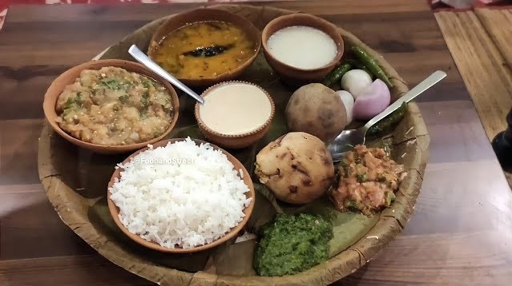
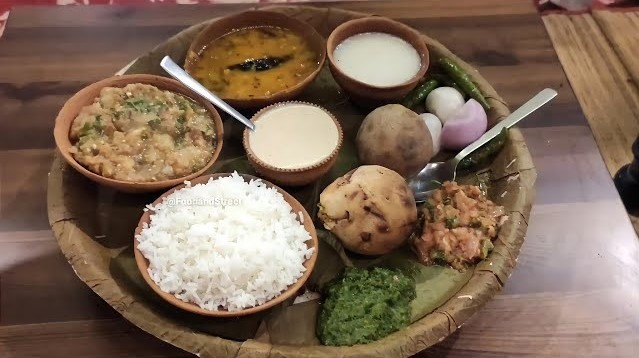

Bati Chokha
Varanasi is also where you can enjoy batti or litti chokha, which is a speciality of Bihar and UP. The baked wheat balls are stuffed with sattu or gram flour, and served with mashed brinjal and dal.
Varanasi is also where you can enjoy batti or litti chokha, which is a speciality of Bihar and UP. The baked wheat balls are stuffed with sattu or gram flour, and served with mashed brinjal and dal.
Address:Daffi Toll Plaza bypass rd Ashokpuram Colony Dafi, Varanasi, Uttar Pradesh 221011 India